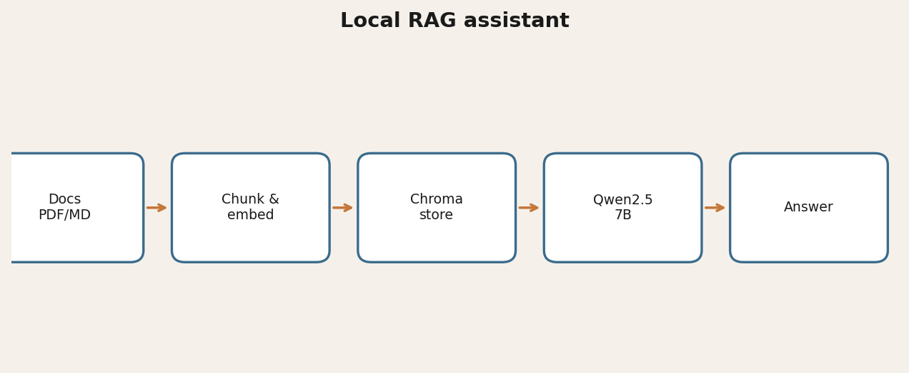

Problem
Searching multi-hundred-page standards is slow; cloud LLMs are often blocked.
Approach
Local RAG with Chroma + Qwen2.5:7B via Ollama.
Results
- Synthetic sample docs in public repo
- Typical answers often 5–40 s on a capable NVIDIA box